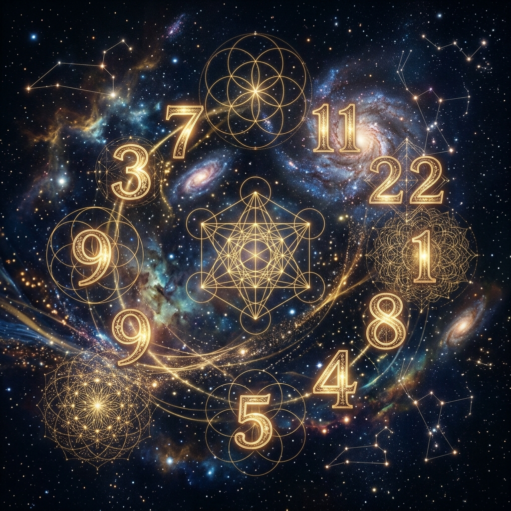

La numerología es una disciplina ancestral que se fundamenta en principios matemáticos e intuitivos que datan de la antigüedad. No es una técnica puramente adivinatoria del futuro, sino una herramienta de autoayuda, introspección personal y orientación espiritual para sintonizar con la vibración cósmica.

El Origen Pitagórico
Se atribuye la creación de esta disciplina al célebre matemático y filósofo griego Pitágoras hace aproximadamente 2700 años. Pitágoras propuso que el universo está constituido por vibraciones ordenadas matemáticamente. Su teoría establece una cadena directa de correspondencia vibratoria:
Números → Sonidos → Vibraciones → Planetas
De acuerdo con esta visión, cada número emite una frequency energética particular que interactúa de forma constante con los seres humanos y el entorno. Estas vibraciones personales tienden a manifestarse repetidamente en la vida cotidiana para ayudarnos a alinear nuestra conciencia con la armonía cósmica.
1. Cómo Calcular tu Número de Sendero de Vida (Fecha de Nacimiento)
Tu número de destino o sendero de vida revela tu carácter innato, tus talentos y, lo más importante, tu misión de vida en esta encarnación terrenal.
Procedimiento paso a paso:
- Suma todos los dígitos que componen tu fecha de nacimiento completa (día, mes y año).
- Reduce el total sumando sus dígitos de forma repetida hasta obtener un valor de un solo dígito (del 1 al 9).
- Regla de los Números Maestros: Si durante el proceso de reducción el total parcial de la suma resulta en 11, 22 o 33, el cálculo se detiene inmediatamente. Estos números poseen un rango energético superior y no deben reducirse a un solo dígito.
Ejemplo práctico: Si naciste el 8 de noviembre de 1980 (08/11/1980):
Suma: 8 (día) + 1 + 1 (mes) + 1 + 9 + 8 + 0 (año) = 28.
Reducción: 2 + 8 = 10 → 1 + 0 = 1. Tu número personal es el 1.
2. Cómo Calcular la Vibración de tu Nombre (Gematría Pitagórica)
Esta metodología permite descubrir la vibración del yo externo y social a través del nombre y los apellidos completos, convirtiendo cada letra en un número según la tabla pitagórica:
| 1 | 2 | 3 | 4 | 5 | 6 | 7 | 8 | 9 |
|---|---|---|---|---|---|---|---|---|
| A, J, S | B, K, T | C, L, U | D, M, V | E, N, W | F, O, X | G, P, Y | H, Q, Z | I, R |
Simplemente sustituye cada letra de tu nombre completo por el número correspondiente, suma todos los valores y redúcelos de la misma manera que la fecha de nacimiento.
3. Significado Profundo de los Números de Destino (1 al 9)
- Número 1 (El Líder): Liderazgo, independencia, creatividad e iniciativa. Su misión es aprender a ser autosuficiente y abrir caminos para otros sin caer en el egoísmo o el autoritarismo. Representa la vibración de los nuevos comienzos, de la chispa creadora y de la fuerza iniciadora que no teme caminar en solitario.
- Número 2 (El Diplomático): Cooperación, diplomacia y búsqueda del equilibrio. Su misión es aprender a conciliar y mediar en conflictos, desarrollando una empatía sincera sin descuidar sus propios límites. Representa la dualidad, la receptividad y el arte de la escucha.
- Número 3 (El Comunicador): Creatividad, optimismo y carisma. Su misión de vida es comunicar e inspirar a través del arte, la escritura o la palabra hablada, llevando alegría al entorno y disolviendo la negatividad mediante la expresión espontánea del corazón.
- Número 4 (El Constructor): Orden, lealtad y disciplina. Su misión es establecer estructuras seguras y bases firmes en el plano terrenal. Debe equilibrar su necesidad de seguridad con la flexibilidad ante los cambios inesperados de la vida.
- Número 5 (El Aventurero): Espíritu libre, dinamismo y adaptabilidad. Su misión es experimentar la libertad personal con responsabilidad, sirviendo como puente de comunicación e intercambio entre personas de diversas culturas o formas de pensar.
- Número 6 (El Protector): Amor familiar, responsabilidad y honestidad. Su camino exige asumir compromisos afectivos, cuidar del núcleo familiar, crear belleza en el hogar y actuar como sanador energético de sus seres queridos.
- Número 7 (El Buscador): Intelecto, introspección, análisis y vida espiritual. Su misión es estudiar los misterios de la existencia en soledad, actuando como un puente entre la ciencia racional y la intuición mística profunda.
- Número 8 (El Ejecutivo): Éxito material, ambición y capacidad de mando. Su misión es dominar las finanzas y el plano material con absoluta rectitud ética, actuando como un administrador justo que provee al bienestar de la sociedad.
- Número 9 (El Humanitario): Altruismo, compasión y perdón. Su sendero le llama a servir incondicionalmente a la humanidad, desapegándose de las ambiciones puramente egoístas para sintonizar con el amor universal.
4. Los Números Maestros y la Trascendencia Evolutiva
Los números maestros (11, 22 y 33) se asocian con un plano vibratorio superior, una gran responsabilidad espiritual y lecciones kármicas intensas. Describen el sendero evolutivo que toda alma debe transitar:
- Número Maestro 11 (La Percepción Espiritual): Representa la sintonía directa con lo invisible, el canal o puente con los planos sutiles. Su vibración exige una constante alineación con la verdad divina, sirviendo como faro intuitivo para otros. A menudo sufren tensiones internas porque perciben verdades invisibles que el mundo material rechaza.
- Número Maestro 22 (El Constructor Material): Posee la intuición y el idealismo del 11 pero con el poder práctico de plasmar esos ideales espirituales en realidades concretas, proyectos a gran escala y obras de infraestructura o sistemas sociales que trasciendan generaciones.
- Número Maestro 33 (La Iluminación Colectiva): Considerado la vibración del avatar o guía compasivo. Representa el amor universal puro puesto enteramente al servicio de curar, guiar y consolar a la humanidad sin esperar ninguna recompensa terrenal. Su sendero exige un desa
Además del número de destino, la numerología pitagórica analiza el Año Personal actual de cada individuo para entender los tránsitos y las tareas que el cosmos nos asigna en cada ciclo de 9 años. Este número se obtiene sumando tu día de nacimiento, tu mes de nacimiento y el año en curso. Por ejemplo, si naciste el 8 de noviembre y deseas saber tu tránsito para el año 2026: 8 + 11 (mes) + 2026 → 8 + 1 + 1 + 2 + 0 + 2 + 6 = 20 → 2. Estarías en un Año Personal 2, un periodo ideal para asociarse, cultivar la paciencia y evitar decisiones precipitadas.